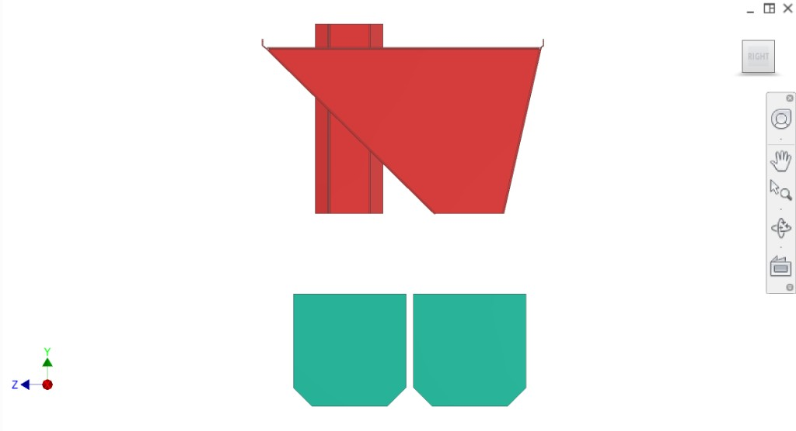
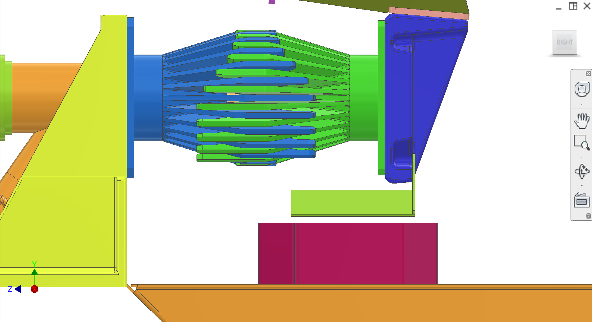

Required core-chute coverage during compression: deflector hardware on the moving driven peeler underside (static deflectors removed).
Introduction
Deflectors are part of the Disposal system and prevent peels from dropping into the core chute stream during compression. In the latest concept, static deflectors on the collection mount plate have been removed; instead, a deflector mounted under the driven peelers covers the core chute openings during the compression stroke, routing peel into the peel chute and keeping the core stream clean.
Colour key & components
Deflector hardware is part of the moving extraction bracket peeler stack; disposal page documents the interface and requirements.
Colour(s)
Component
—
Driven underside deflector — stiff formed/bent plate(s) mounted under driven peeler modules to cover core chutes during compression.
—
Core-chute interface — clearance envelope vs. core tubes and peel flow paths.
Figures
Core chute context (CAD) plus photo of the driven deflector covering the core-chute / auger opening during compression intent. Refer to Figure 1–Figure 2.


Figure 1. Core chute context (CAD) — deflector overlay still useful for stroke animation.
1 / 2
Recommended figures (contractor clarity)
Add figure: Driven chute deflector CAD overlay — on Figure 1 through full compression stroke (photo coverage in Figure 2 supplements but does not replace CAD sequence).
Add figure: Peel trajectory — vs deflector edge and core tube hex geometry.
The deflector must maintain clearance and coverage over the full compression stroke without collision. CIP spray must be able to reach around/through the deflector as designed.
Part
Interface / tolerance
Related
Deflector coverage
Must cover core chute openings during compression while allowing required peel flow path